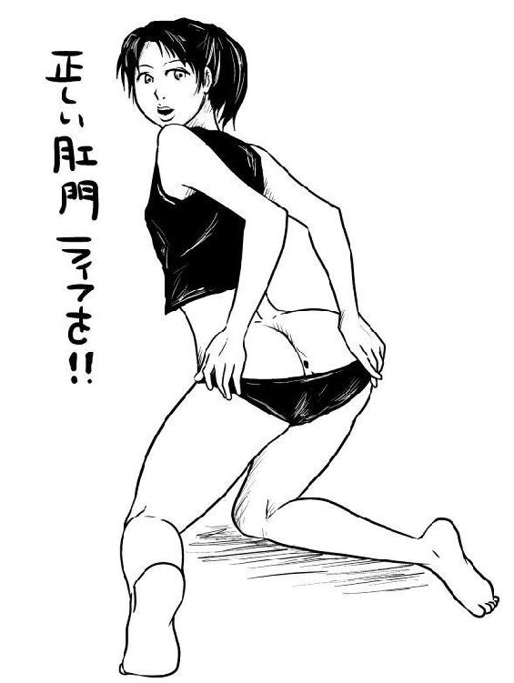

| 完全アヌス読本 | |
| 杏橋悠介 | |
| (2014) | |
肛門は誰しもが幼少期から親しんでいる部位であります。 フロイトによれば、人が生まれて初めて自分と外界を繋ぐ、 ソーシャルツールが肛門であり、 トイレ行為によって、母と子の関係が形成されます。 二歳までのウンコや肛門による経験が、 一生を左右する性格に影響を及ぼします。 トイレを覚えず、ウンコを漏らしたままにしておけば、 汚れを自覚する事なく育ち、 だらしない人間として成長するかもしれませんし、 早期にトイレを覚え、自分でコントロール出来た子供は、 アイデンティティを確立し母との繋がり、 人との関わり合いを肛門によって学び、優れた大人へと成長するのです。 また、その様な立派なウンコ使いとして育たなかった読者諸氏も、 これからのアヌスとの付き合い方で、 赤ちゃんの時の失敗を取り戻せるかもしれません。 一般的な性癖が一つ一つが過去へのこだわりだとすると、 今のあなたのアヌスへのこだわりは、 あなたを確立する為に不可欠な物かもしれません。 ソレに気が付くあなたは自己の確認と修復を果たし、 今まさに人生を謳歌しているに違いありません。 アナル探求者に敗北者は存在せず、 全てのアナリストが肛門というフロンティアに飛び込む挑戦者であり、 自らのコントロールを手に入れている勝者達なのですから。 それが例え思い違いであったとしても、確認行為は自己の発見に繋がり アナルへの探求は、これからのあなたを目覚めさせる事になるでしょう。
さっそく挿入の方法を解説しておきましょう 相手によって挿入姿勢をチョイスする事により、 安全なアナルセックスを生み出します。 まずは、ホモ相手の場合を考察してみましょう

ホモに対する、起き上がり正常位。 この様な姿勢の利点は前立腺を刺激しやすく 挿入側にも心地よい圧迫感を楽しめるという事があります。 また、バックの場合は相手のチンポがブラブラしてしまうので ブラブラ防止の為に仰向けでの挿入が好ましいと言えます。 前立腺を刺激する意味でも仰向けの方が圧力をかける事が出来ます
女性のアヌスの場合はバックからアクセスが理想的と言えます 肉厚な尻の感触を楽しみながら、 安全なストロークを実現させる姿勢がバックです。 直腸はデリケートな肉穴であり、 挿入によって変な当たり方をすればローションを使っても、 腸壁を傷つけてしまいますので、 腸壁に逆らわない様、滑るように出し入れします。
しばらくは、安定した動きによって腸の様子を伺い、 相手が慣れた頃に激しく出し入れしましょう。 ある程度ペニスに慣れてしまえば、 綺麗な角度での出し入れにおいては激しく出来ます。 そもそも女性の場合、アナルより膣の方への挿入を希望します しかし、アナルからでも子宮付近への圧力をかける事が可能です。
女性の膣にはGスポットなどがあるという伝説がありますが、 科学的に証明されていません。 噂では膣全体の感覚によって気持ちよさを捉えてるのではないか？ という見解があります、その意味では、 アナルから全体への刺激を与える事も可能です
もちろんアナルセックスとは精神面の欲求でありますし、 理屈や科学的な事を無視して雰囲気を楽しむのが理想と言えます。 心で感じるという事が何よりの快楽になります。 単純に背徳感や挑戦者としてのスリル、 冒険心を満たす物である事が心を刺激し、 挿入の実感と共に充実したアナルセックスを楽しめます。
アナルセックスで問題がある体位は正常位が上げられます。 完全な仰向け状態では肛門は収縮して閉まります、 これを応用して、あえて楽しむくらいの拡張や、 コントロールが可能でしたら問題ありません。 通常は筋肉と角度の問題で、 アナルに入りにくい姿勢が正常位となります。
アナニーやアナルセックスの際に ローション代りにリンスを使う人を見かけますが 科学的なソースがあるわけでは無いのですが、 マヨネーズ、バター、水、お湯、 せっけん類は基本的に中毒の危険があると思います。
肛門は口の中より吸収率が高く、 肝臓で濾過を通さずに粘膜からダイレクトに、 血液に成分が溶け込むので、 安全の確認が出来ない代用品、化学物質の使用は危険です。
また最近ヲシュレットで浣腸するとか言う人がいる聞いたんですが、 ヲシュレットは殺菌されてる水を使うかもしれませんが、 基本的に水道局から供給される分類、下水に当たり、あまり推奨できません。 シャワーヘッドを肛門に当てるシャワー浣腸なども、飲み水を使いますが、 推奨できるか？と問われれば、やはり出来ないでしょう。 水道水つまり飲み水は飲む為の設計であって、 肛門に入れる設計では無いはずです。
この件について各業界のイメージに関わってきますから、 真実について、医者すら信用できる答えを持っていないかもしれません。 その為、浣腸手法やローション選びを慎重に行い、 直腸から血液への吸収率は、 口内を凌駕する事実を踏まえた対処が好ましいです。 そして大事な事は、アヌスを理解した挿入であり、 アヌスに指の挿入は、ローションの使用の有無に関わらず、 少量のツバや愛液でアクセス可能です。
少量の円滑材でもアクセス出来るという事は、 アヌスをマスターしている事になります。 アヌスから直腸へは幾つかの障壁があり、 外装である皮膚、骨組みである筋肉、 そして、粘膜と姿勢による圧力などの障壁要素があり、 これらを理解する事が、 どの様なローションにも対応できるアナリストを生み出します。
最初の障壁である皮膚は筋肉と連動し、 収縮した状態がデフォルトなので、 この肛門の均衡を崩す挿入が必要になります。 肛門を点として捉えるのでは無く、 円として捉え指によって円を崩すイメージが必要です。
肛門の中心は最も皮膚の摩擦、 筋肉の圧力が高い為に、防御力が高いです。 肛門への侵入は円の一部を広げ押す、 または潰し押す様な形で滑り込ませます。 大量のローションを使えばどうにかなると、思っていると、 この理屈を忘れがちです。
あくまでも挿入行為は肛門にとってイレギュラーである事実を踏まえて、 テクニカルに挿入することが問われてくることになるかと思います。 最初の門番である、肛門の排他的なシステムをハックし潜り抜けたら、 次のシステムが待っています、排便反射です。 直腸は脳をあまり使わないで、 ウンコを絞りだす能力を持っている為に、 肛門内部の圧力が高まると、ウンコを出そうとします。 男性の場合、 筋肉と連動し前立腺の刺激となり快感を生み出すのですが、 基本的に体外へのアウトプットをするシステムなので、 之をハッキングするテクニックが問われます。
女性の膣なども反射を利用した筋肉運動が、 脳への快楽スイッチを押します。 何故なら人体の動力は筋肉運動以外に存在しないからです。 その運動を脳が理解し快楽にもなりますが、 この場合はウンコをするか、しないか、そういうハックして操るわけですから、 完全なウンコの場合の動作をさせては、 ウンコしてるだけの快感に終わります。 そこで、この反射を基本的には抑えます。 反射というのは、 喉に異物が入ったりして咳き込んだり、呼吸その物だったり、 心臓の運動だったりするわけで、コントロールは難しいです。 ただ、我々は甘出しの技術によって、 射精だけさせて射精運動はさせないという様な、 チンコのハッキングには成功しています。 具体的な方法は無いのですが、 大事なのは心や脳が感じる快楽を求めているので、 反射による快楽はセーブしていくイメージ、 力を抜いた感じで直腸を攻略してください。
仮に、排便反射ばかりを追求していたら腸の収縮運動だけですから、 かなり筋肉疲労になり、それがセックスなら、 バナナを分断するような圧になって入れにくいはずです。 ふっわ、という様なイメージで力を抜いてみると排便反射は抑えられます。 排便反射を楽しむという手法もあるとは思いますが、 それはウンコすれば良いので、 個人的にはそのギリッギリのラインを追求する事が、 アナルセックスの究極アルティマニアだと設定しています。
アナリストと尻コキは切っても切り離せない存在です。 フロイト的分析によれば、 アナリストの欲求の根本に回帰や懐古思想があるからです。 尻コキとは、尻肉にチンポを挟み込み、 摩擦によって射精する様な行為を指します。 この行為の根底にあるのは、 性的欲求の初期段階を表現する事が主題となっています。 本来のセックスをあえてしない、 まるで幼少期のチンポマッサージでオナニー覚えたとか、 少女が机の角オナニーを覚えたとか、 その位の次元の快楽を復古させる事が、 尻コキの最大のピークと言っても過言では無いでしょう。
そして、その行為というのは分類すれば、 直接性交ではないキスや愛撫、すべての前戯に通じる事ではあります。 ただ、それらの行為と性質を異にするのは、 尻コキは性交をシンクロさせている行為です。 キスで射精はしませんが、尻コキは射精が可能なのです。 言ってみれば、自らの精神をハッキングし、 己が欲する愛をそこに実現させる行為なのです。 この愛の形というのは言葉にすることは難しく、 尻コキストの心に問題なので、 幾万の言葉や愛を語るより、尻コキした方が早いのです。
それでは尻コキの姿勢と素材について解説致しましょう。 カップルがいちゃつく様な姿勢でポコチンをケツの割れ目に食い込ませ、 オッパイなどを揉みながら射精するという流れがメインストリームになります。 さらにスエットやジャージ生地を利用すれば、 滑らかでスムージィな擦りつけが実現でき、 何か懐かしさと共に原点回帰へと心をリフレッシュすることが可能です。 可能ならオプションとして、 口内射精を付け加えたり、台本を用意しましょう。 代表的な台本としては、 「えっ、出ちゃうの？そのまま出しちゃうの？」 「セックスしなくていいの？勿体ないよ？」 「しゃぶろうか？口で射精しないの？」 など、そのままで大丈夫なのか、 と言ったようなセリフを用意して頂く事で、 忘れていた冒険心を取り戻し、真の自分が目覚める事請け合いです。
AVなどで見る通常のバックの様なスタイルで尻コキは、 接点が少ないので摩擦係数が低くイマイチ感が否めません。 少なからず、抱き合う様に接点を増やし、 密着する事が尻コキの本来の姿だと理解しておくべきでしょう。

直接ウンコが出る瞬間を観察する場合は、 ゴーグルとアナルビーズを用意しましょう。 生のウンコを観察しても良いのですが、処理が大変だと思います。 アナルビーズを利用して、気の済むまで肛門の動向を観察出来ます。 この際のオプションとして、 セリフ「見ないで～、うんこ出ちゃう！」を追加してみるのも良いかと思います。 さらに時限式テマンという、 いつビーズが噴き出すか解らないスリルの中で、 テマンに興じるというのもアナリストの皆さんを満足させる事でしょう。 パートナーのウンコが出る所を毎回見ていたら別れるのかもしれませんが、 あえて見るなら筆者は和式便所というロケーションをお勧めします。
古来の伝統美である、 ウンコの生産性と尻の生み出す力を同時に体験でき、 観察に適した芸術的存在、和式トイレ。 近頃では公園の便所くらいでしか見かけませんが、 キャンピングカー用の簡易トイレを観察用に用意しても楽しめます。
うんこが出る所を見るパートナーが居ない場合は、 中国の地方ではトイレに扉が無く肛門が見放題との事です。 憶測の域を出ませんが、 肛門が見れても男女は別の場所の可能性があります。 農村まで行くと、トイレに壁すら無く、穴があるだけらしいので、 中国の田舎というのはアナリストの聖地なのかもしれません。 肛門はともかく、和式トイレという物が公共施設から減りつつあり、 幾つかのアンケートなどをググりましても、 和式を選ぶ人は数パーセントという結果です。 この事はアナリストへの迫害であり、 和式でするウンコの美学を冒涜した時代と言えます。 足首に少し力を入れてする、 野生的ウンコの充実感が人類から失われるのは悲しいので、 和式ウンコを求める諸氏は、 人里離れた山中で野糞を嗜むと良いかと思います。
足首と太もも、肛門に伝わる緊張感、 枝や草木がケツに刺さるんじゃないか？ 自然との対峙、興奮とスリルが排便にはあったのだと、 気が付く事が出来るでしょう。

アナリストの事件、雑学についてお話ししましょう 一人の男のアナニーが国を崩壊させた事件をご存知でしょうか？ ジョルジェ・マルティノヴィッチ事件 民族紛争の火薬庫というバルカン半島で農夫ジョルジェは、 ケツにビール瓶が突き刺さり医者に担ぎ込まれました。 あろうことか、セルビア人の彼はアルバニア人によって暴行を受けたと言い かの惨劇、ボスニアヘルツゴビナ紛争にまで発展します。 この史上まれに見る泥沼の戦争の発端が、 農夫のアナニスト、アナニーの言い訳だったワケです。 勿論、昔からこの地は民族紛争があり、虐殺の歴史や、 串刺し刑などの伝統があった為にアナニーの事故を火種として、 政治利用されただけかもしれません。
次は良くある、アナルとウナギ事件なのですが、 今年四川省の５９歳の男性が腹痛を訴えて病院に担ぎ込まれ、 ウナギを沢山食べたと医者に言っただけだったので、 原因不明のまま昏睡状態になる。 緊急手術の結果、 肛門から５０センチを超えるタウナギというウナギが出てきて、 １０日に及ぶ危篤状態から一命を取り留めた。 単なるアナニーだと思うのですが、 この結果から中国警察は暴行事件だと推測して捜査をしています。 また、ウナギは死んでいましたが、腸を食い破って大量の出血を起こし、 ウナギの持っていた細菌によって男性は死にそうになったという事です。 人間は皮膚などによって最近から身を守っていますが、 自ら内臓に生き物を入れるという事が愚行だと、 アナニストならば気が付いて欲しいです。
次は、また中国なのですが、入れる物が変わり種で 肛門にエアポンプを挿し込み、 スイッチを入れてみたら腸が爆発した事件です アナニーかどうか判別できません ２０１０年、被害者男性は、 加害者男性の同僚で冗談を言い合うなど、良好な関係であり 事故発生当時、勤務を終えて加害者男性はエアポンプを、 腰をかがめて道具を片付けていた被害者男性の肛門に エアポンプを差し込みスイッチを入れてみたら、 被害者男性は叫び声を上げて飛び上がり、 腹部はみるみる膨れ上がった。 被害者男性の家族により病院に担ぎ込まれ、検査の結果、 直腸破裂と内出血で手術が行われ、一命を取り留めた。 この事件は学ぶべき所があります、 エアーの圧が高く危険なのは理解しやすいですが、 シャワー浣腸なども場合によっては、これに近い行いだと思うので、 シャワー浣腸は水量を注意するべきだな・・・と。
改訂二版を作る切欠は、 初版売上をチェックした所、 一ケ月で十部ほど売れたという事があり、 これが代表作になってしまったので、 初版の見直しを行ったという経緯があります。 三版は、品質センターから「目次無いよ」って注意を受け ワードパットで編纂しました。 ４版は☆１を付けたプレミアム会員がいたので カスタマーに排除をお願いした所、 無理だったので、その回避を重点的に行いました
ＥＮＤ